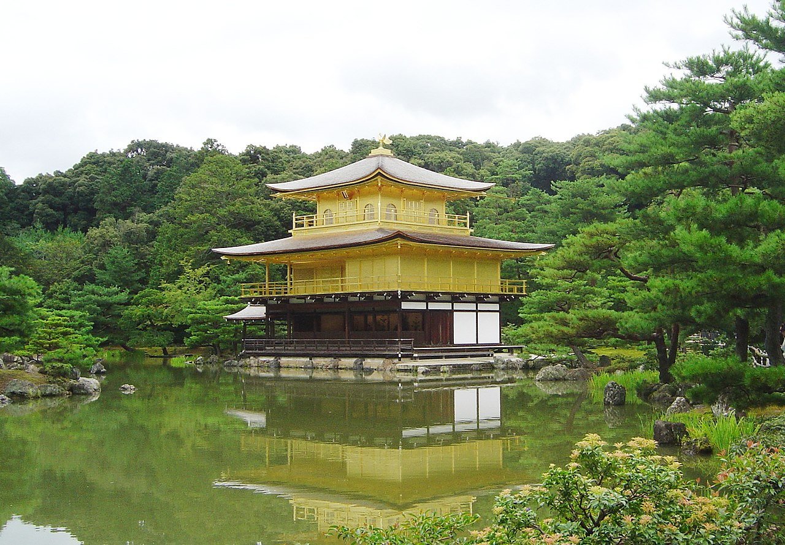

Kyoto

Kyōtō adalah kota yang terletak di Pulau Honshu, Jepang. Kota ini merupakan bagian dari daerah metropolitan Osaka-Kobe-Kyoto. Kyoto memiliki banyak situs bersejarah dan merupakan ibu kota Prefektur Kyoto.
Ibu kota istana (tojō) bernama Heian-kyō ditetapkan sebagai ibu kota pada tahun 794. Sebagai ibu kota (miyako), Heian-kyō menjadi pusat pemerintahan dan budaya Jepang. Pada masa itu, ibu kota disebut kyō no miyako yang selanjutnya berubah menjadi Kyoto. Di zaman dulu, Kyoto juga disebut Kyōraku, Rakuchū, atau Rakuyō. Penamaan seperti ini mengikuti kebiasaan di Tiongkok yang memiliki ibu kota di Rakuyō (Luoyang).